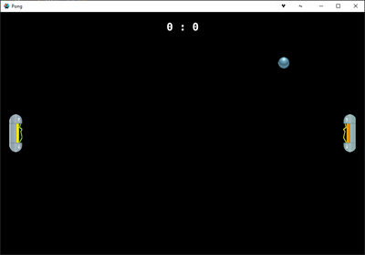

Tutorials for 2D games projects
New components introduced
| The IDE - how to write programs in Defold. | |
| Atlas - how to store graphics files as memory efficient bitmaps. | |
| Collection - how to put game objects into the game. | |
| Collision object - how to apply hit boxes to game objects. | |
| Folder - how to import graphics files into Defold. | |
| Game object - how to create things that move and react. | |
| Key bindings - how to detect inputs. | |
| Label - how to use fonts and put text on the screen. | |
| Script - how to write Lua code to control game objects. | |
| Sprite - how to attach bitmaps to game objects. | |
| Sound - how to use sound files and objects. |
Pong | Step-by-step tutorial

The classic game for two players. Each player controls a paddle on each side of the screen. The object of the game is to hit the ball back to your opponent. You score a point if your opponent fails to hit the ball back to you.
This tutorial assumes you have not built a game using Defold before, but have some experience of programming.
- Stage 1: starting a new Defold project.
- Stage 2: importing graphics into the game.
- Stage 3: creating the game objects:
- Stage 4: setting keyboard bindings to capture player inputs.
- Stage 5: creating the scripts to move the game objects:
- Stage 6: handling objects leaving the screen.
- Stage 7: using collision objects to make the ball bounce off the paddles.
- Stage 8: using a game object to display the score.
- Stage 9: adding sound effects.
- Stage 10: adding some 'snap'.
- Stage 11: adding some 'crackle'.
- Stage 12: adding some 'pop'.
What you learned in this tutorial
- The game.project file stores the settings for the game.
The assets panel is just a handy file explorer. The outline panel actually holds the game objects in the IDE. - Sprites are stored in an atlas which is a memory efficient binary store of the image data.
- A game is built from game objects (go's).
A game object has components attached to it: sprites, scripts and collision objects. - Inputs are bound to actions.
Actions can be used in scripts to respond to inputs. - Lua code called scripts are written in event functions using simple object-oriented techniques.
Each game object has it's own script that determines it's attributes and methods.
- Collision objects are attached to game objects to give them hit boxes.
Message passing allows objects to communicate with each other in response to collisions. - On-screen text requires a label and font object.
- Sound effects are added to game objects by using sound objects.
 Craig'n'Dave | Version 1.3
Craig'n'Dave | Version 1.3